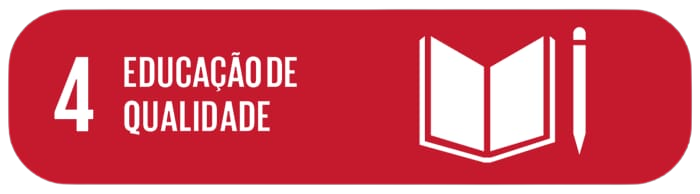

Educação de Qualidade
.png)
“Qualidade é você conseguir conviver em um ambiente em que os seus aprendizados são confrontados a partir das suas experiências e a partir do contato com a experiência do outro. A escuta que a escola tem que construir passa por ouvir famílias e comunidades”.
"Não basta apenas acessar a escola ou educação, mas que é necessário acessá-lo em um determinado tempo, com condições exploradas nas metas, desde a valorização da docência, da gestão democrática até o acolhimento de diferenças. O PNE nos indica o que coletivamente o país elegeu, num determinado histórico, para si mesmo como uma responsabilidade de qualidade"
*Trechos de Cecilia Garcia - Portal Aprediz
Esse objetivo é fundamental para se alcançar os outros 16 ODS. A ONU explica o porquê no documento “Quality education: why it matters?”
De acordo com o documento, é com a educação de qualidade que as pessoas conseguem romper o ciclo da pobreza. Ela também permite conquistar uma maior equidade entre gêneros, além de incentivar a adoção de hábitos de vida mais saudáveis e sustentáveis. Por fim, cumprir o ODS 4 é crucial para ter uma sociedade mais tolerante e pacífica.

“Até 2030, garantir que todas as meninas e meninos completem o ensino fundamental e médio, equitativo e de qualidade, na idade adequada, assegurando a oferta gratuita na rede pública e que conduza a resultados de aprendizagem satisfatórios e relevantes.”

“Até 2030, assegurar a todas as meninas e meninos o desenvolvimento integral na primeira infância, acesso a cuidados e à educação infantil de qualidade, de modo que estejam preparados para o ensino fundamental.”

“Até 2030, assegurar a equidade (gênero, raça, renda, território e outros) de acesso e permanência à educação profissional e à educação superior de qualidade, de forma gratuita ou a preços acessíveis.”

“Até 2030, aumentar substancialmente o número de jovens e adultos que tenham as competências necessárias, sobretudo técnicas e profissionais, para o emprego, trabalho decente e empreendedorismo.”
É inegável: há uma evolução mundial no acesso à educação. E esta evolução acontece também no Brasil. Dados de monitoramento das metas do Plano Nacional de Educação (PNE) divulgados pelo Instituto Nacional de Estudos e Pesquisas Educacionais Anísio Teixeira (Inep) mostram que em 2014, quando o PNE começou a vigorar, 89,1% das crianças entre 4 e 5 anos estavam matriculadas, o que deixava 604 mil delas fora da pré-escola. Já em 2016, esse número caiu para 450 mil, e a porcentagem de crianças matriculadas foi para 91,5%.
Apesar de avanços como este, quando nos voltamos para outros dados é possível compreender o quanto ainda precisa ser feito para que a educação de fato contemple todas as pessoas. Afinal, existem grupos que continuam sendo deixados para trás.
Meu nome é Aline Santana, tenho 38 anos e sou auxiliar admistrativo na empresa Centro Social Irmã Elisa Maria,faço parte do programa ELASNATECH e este tem como intenção estimular mulheres sejam inseridos no mercado de programação e tecnologia.O tema escolhido foi baseado na ODS (objetivos de Desenvolvimento Sustentavel) que são globais estabelecidos pela ONU.O tema abordado fala sobre a ODS4 (Qualidade de Educação) este assunto será sempre discutido pois a educação de qualidade consegue romper o ciclo de pobreza dando um nivél intelectual maior para o individuo, onde é um direito seu inicio a patir da primeira infância, é evitente que é um tema que deve ser abordado e discutido pelos orgãos públicos e privados e a população consientizada havendo sempre reflexão sobre o assunto.